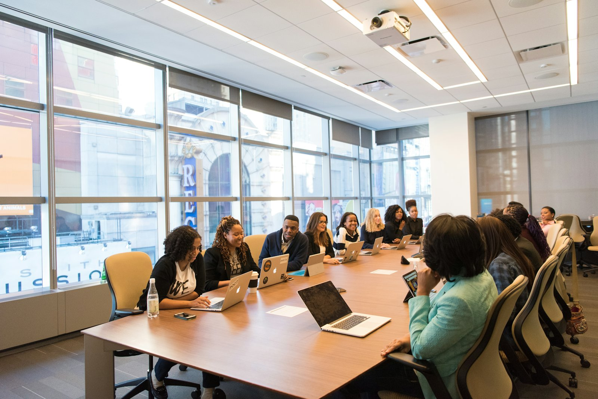
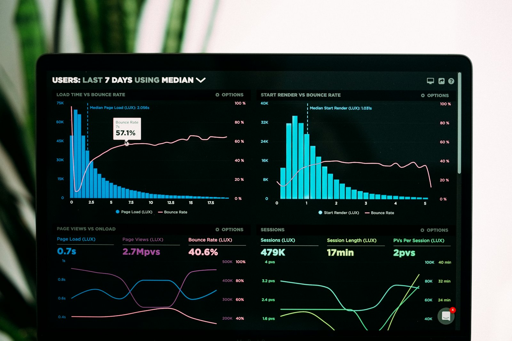

Fractional CFO
Board-grade finance leadership two to eight days a month: reporting, forecasting, cash discipline, controls and the finance team behind them.
Fractional CFO & non-executive advisory
We work with founder-led and family-owned businesses in food, manufacturing and distribution — succession, governance, exit readiness and transaction support. Telford-based, working UK-wide.
Track record
Joined at £10m turnover, grown to £32m and sold to a listed Nordic food group at 11× earnings.
National distribution business transformed and sold to a FTSE-listed trade buyer roughly three years ahead of plan.
Return on sales turned around in 18 months, feeding directly into the sale price.
Two decades of multi-site manufacturing, food production and distribution behind the practice — most of it spent making businesses worth more than they were when we arrived.
What we do
Board-grade finance leadership two to eight days a month: reporting, forecasting, cash discipline, controls and the finance team behind them.
Structural cost reviews, pricing and customer profitability, productivity and working capital — margin recovered where it actually leaks.
Equity story, diligence readiness, buyer-grade reporting, integration and synergy delivery — from first conversation to completion.
Board structure and cadence, succession, ownership transition — the grown-up governance a family business needs before someone asks for it.
Power BI and NetSuite Analytics Warehouse implementation — the back-end model and the front-end interface — so the board reports on numbers it can trust.
Most engagements start as one and become another. An honest hour with one of our directors will tell us both.
Talk to the teamThe practice

Themis is a small team of senior finance practitioners — directors, consultants and specialist associates — drawn from twenty-plus years of leading, scaling and turning around complex multi-site organisations across the UK and Europe: food, building products, engineered metals, construction and national distribution.
We work with founder-led £10m–£100m businesses to restore performance, accelerate growth and increase equity value through disciplined financial leadership, operational transformation and strategic M&A execution. The practice is led by Richard Cooke ACMA CGMA, CIMA-qualified since 1997, who sets the standard every engagement is delivered to.
Themis MIS
Our fifth mandate, and increasingly the first one clients ask for. Power BI and NetSuite Analytics Warehouse implementation — back-end models and front-end interface — delivered full-time or fractionally by our dedicated IT consultants.
A reporting architecture that fits how your business actually decides — not a dashboard sprawl.
Data models, DAX and refresh pipelines underneath; a clear, usable interface on top.
Implemented, populated and governed — with the reporting layer built on it.

Our people

Founder & Fractional CFO
Turnaround, exit readiness and M&A execution across food, manufacturing and distribution.
Finance transformation
Finance transformation and integration delivery across manufacturing, food and distribution clients.
Reporting & controls
Month-end, management reporting and control frameworks built to withstand diligence.
Themis MIS — Power BI & NSAW
Data models, refresh pipelines and reporting interfaces, built and handed over with documentation.
Engagements are resourced from the practice and a network of specialist associates, so the seniority on the work matches the decision in front of you.
“Match the spend to the problem, not the title on the door.”
Richard Cooke · Founder & Fractional CFO, Themis Professional Services
Tell us the problem. If we're not the right people for it, we'll say so and point you at who is.
Contact →